How They Store It?
Types of Food
SLCC distribute various kinds of food. It includes, canned food, meat, diary, vegetables, and fruits.
South Loop Community Church stores their food in a small room. The Pantry stores bread (only when they have it), canned goods, dry foods, fruit, and vegetables. They have multiple refrigerators that they use to keep the food cold. They also have bins where they keep canned food when the shelves are over stocked. The bins are also used to transport food between rooms. The many shelves and refrigerators the pantry has allows it to hold a lot of food.
They distribute food in the first-come-must-serve-first (it's not actually what the process is called). When food comes in first, they must get rid of that first before they start on the second batch. This pantry also handles non food ideas such as soap and toothpaste!
Organizations
Like all good organizers, they label just about everything. There is labels, usually numbers on section of foods and they keep everything tidy.
Gallery
 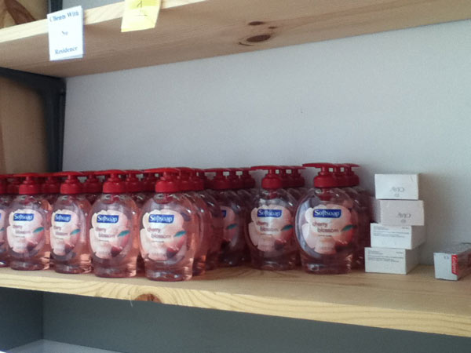
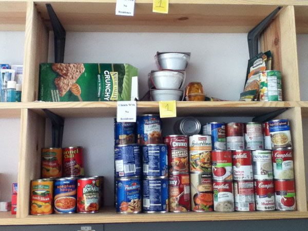
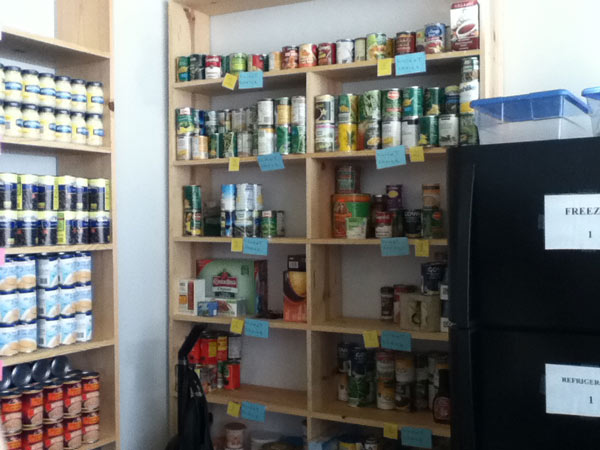
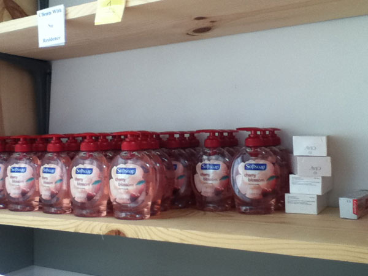
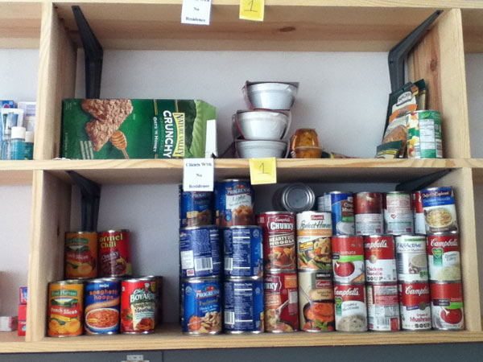
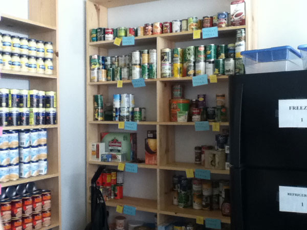
 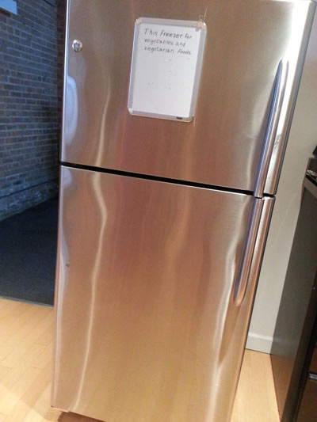
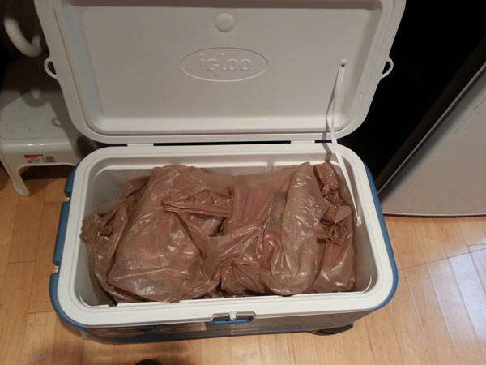
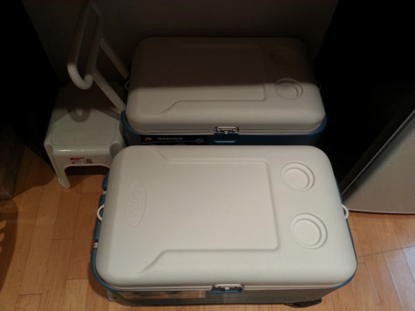
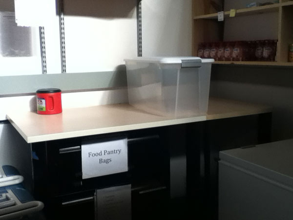
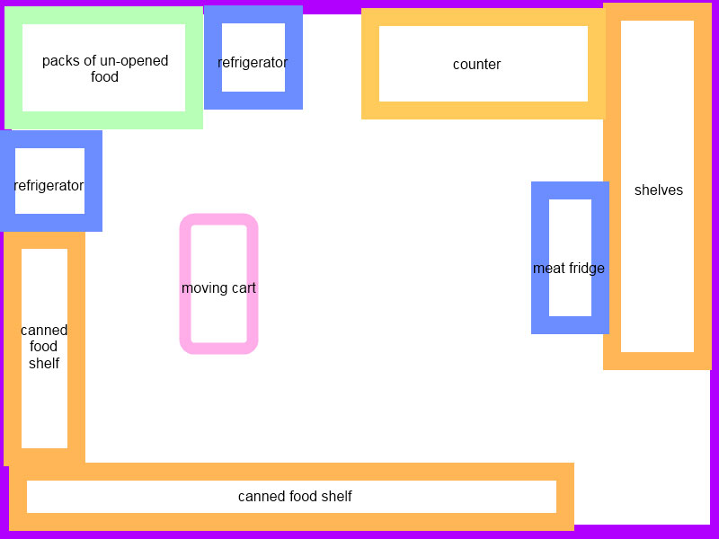
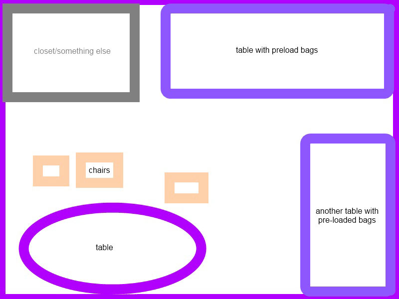
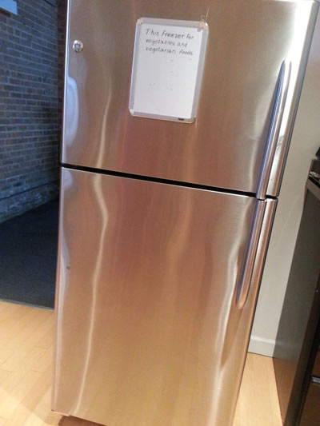
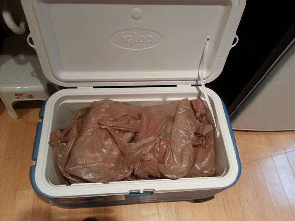
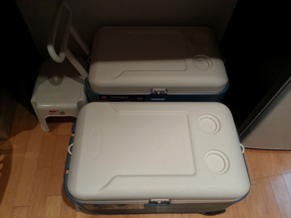
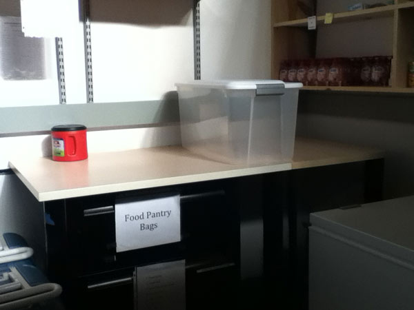
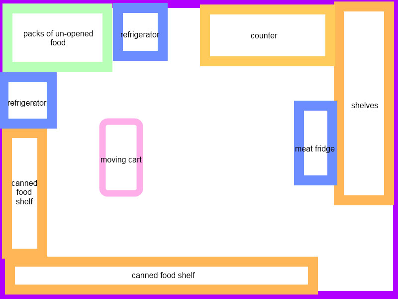
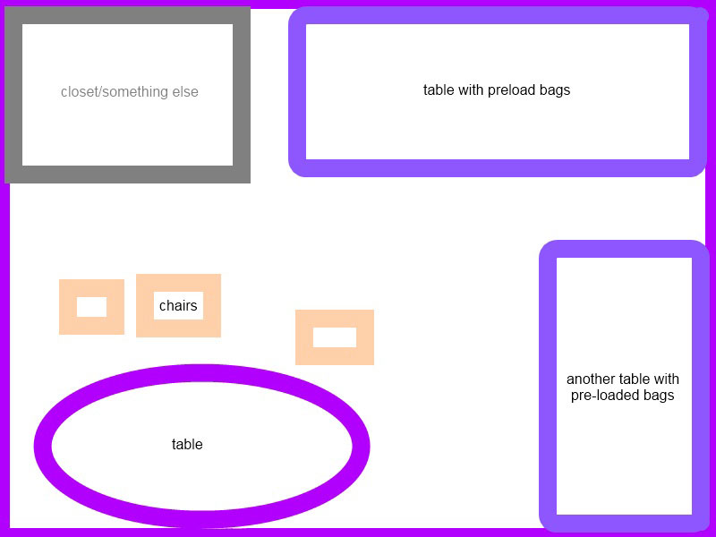
click the "i" on the top-left screen of the gallery to get more information.